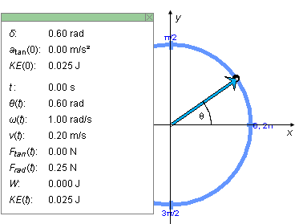
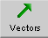
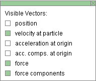
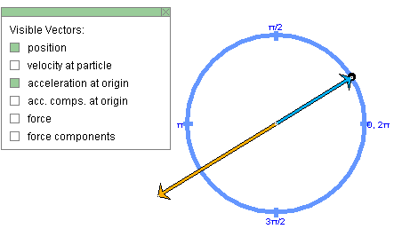
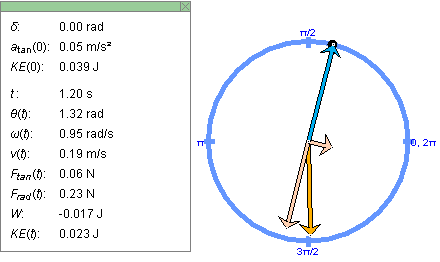
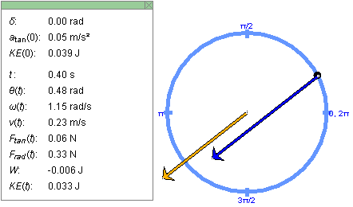

Instructions
This page is designed to get you started using the applet. The applet should be open. The step-by-step instructions on this page are to be done in the applet. You may need to toggle back and forth between instructions and applet if your screen space is limited.
 1. Initial Conditions, System
Parameters, and Corresponding Motion
1. Initial Conditions, System
Parameters, and Corresponding Motion

Exercise 1. RESET the applet.
The circular path of the mass point is displayed in blue, with angular positions in radian marked at the quarter points. The mass point is shown as a black dot and is located at the point marked "0, 2p".
Display the Data box by selecting the Data button
 .
.
Click on the mass point, and drag it along the circle to set the starting position of the mass point so that the phase angle q(0) = d is equal to 0.60 rad. The value of d is the first item shown in the Data box. The phase angle is the angle between the x-axis and the radius from the center of the circle to the mass point. This initial position and the corresponding Data box are illustrated in Figure 1 below.

Figure 1
The x,y axes in Figure 1 above have been added for clarity. They are not illustrated in the applet. Neither is the phase angle q between the position vector and the positive x-axis. The value of q(t), which varies in time with the position vector, is shown in the lower portion of the Data box. Its initial value at time t = 0 is the angle d shown in the upper portion of the Data box.
Figure 1 also shows the position vector of the mass point, in cyan. To display this vector, select the Vectors button  to display the Vector panel, and select "position" on that panel. The Vector panel is illustrated in Figure 2 below, with "velocity", "force", and "force components" selected. For the time being, select only "position".

Figure 2
Exercise 2. Continuing from Exercise 1, make the following settings:
Play  the motion. Then Pause it.
the motion. Then Pause it.
Display the Data box, and write down the values of d, w(0), t, and q(t). You should find that they satisfy the equation "q(t) = w(0)×t + d" because the motion has constant angular velocity. Check it.
Exercise 3. Continuing from Exercise 2, REWIND the applet.
Change the setting of one of the following sliders. Then PLAY the motion. REWIND, change the setting of another slider, and PLAY the motion again, etc.
Exercise 1. RESET the applet. Change the value of the initial circle velocity v(0) from its default value to 0.25 m/s. Don't change any other slider settings.
Select "position" and "acceleration at origin" in the Vector Panel to display the position and acceleration vectors of the mass point. Both have their tail ends attached to the origin. PLAY the motion.
Answer. Figure 3 below illustrates what you might see at some instant.

Figure 3
In this motion, where the circle velocity v is constant, the acceleration vector is always opposite to the position vector. For the definition of "circle velocity" see Help, Point 2.
Exercise 2. REWIND the applet. Keep the settings from Exercise 1, except for that of the dv/dt-slider. Change it from 0 to -0.05 m/s2.
In addition to the position and acceleration vectors, display the components of the acceleration vector. They are shown in pale orange. Display the Data box, and STEP the motion to time t = 1.20 s. Figure 4 below shows the configuration at that instant.

Figure 4
Now that the circle velocity v is changing, the acceleration vector is not opposite to the position vector, but has a tangential component whose direction is opposite to the mass point's velocity at that moment. You may want to display the velocity vector to verify this.
Exercise 3. REWIND the applet. Display the force vector and the acceleration vector, but no other vectors. Observe that the two vectors are parallel to each other, i.e., that they have the same direction.
PLAY the motion, and observe that the two vectors remain parallel at all times. Figure 5 below shows the configuration at t = 0.40 s.

Figure 5
REWIND the applet, and vary the mass of the mass point. Observe the corresponding changes in the length of the arrow representing the force. The acceleration is not affected.
Exercise 1. RESET the applet.
Display the velocity vector of the mass point and the net force acting on the mass point by selecting "velocity at particle" and "force" in the Vector Panel. Display the Data box.
PLAY the motion, and observe that the force vector keeps pointing towards the center of the circle and is always at right angles to the velocity vector.
Also observe that the red kinetic energy bar remains constant in height and, that the value of KE(t) in the Data box remains constant, and that the value of the work W done on the particle stays 0.
Exercise 2. REWIND the applet. Set the dv/dt-slider to -0.05 m/s2, and PLAY the motion.
Observe that the work done on the particle takes on increasingly negative values at first and that the kinetic energy values are correspondingly decreasing. The red kinetic energy bar is shrinking in height. Around t = 4.0 s, the kinetic energy is reduced to zero and the mass point's motion is momentarily halted. Subsequently the mass point moves in the opposite direction with increasing kinetic energy. The values of W are becoming less negative, reach 0 at the starting point of the mass point, and become positive beyond that.
When the two vectors on display become too long, choose a smaller setting of the Zoom-slider.
Exercise 3. REWIND the applet. In addition to the net force and velocity vectors, display the component vectors of the net force.
PLAY the motion, and observe that the tangential component of the net force stays constant in magnitude. Check that its magnitude Ftan, which is displayed in the Data box, is equal to m|dv/dt|.
The magnitude Frad of the radial component of the net force is varying in proportion with the square of the speed of the mass point. Check that the values of Frad displayed in the Data box can be calculated from Frad = mv2/r.